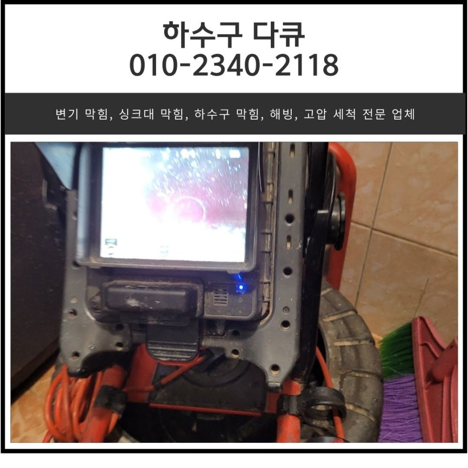
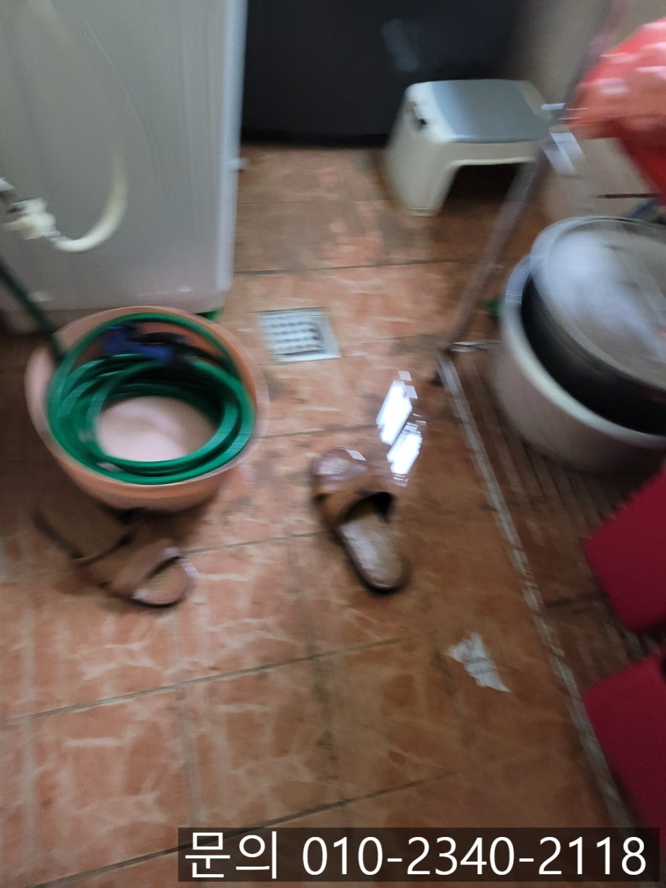
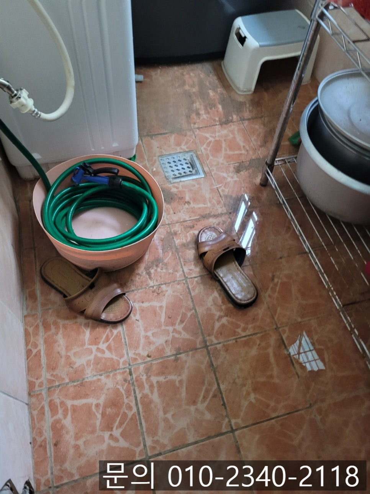
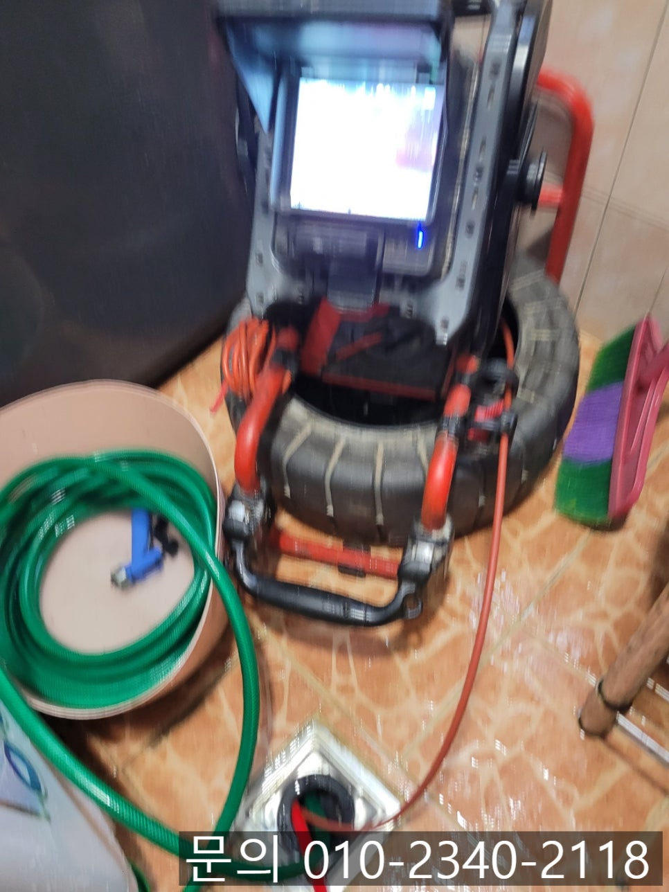
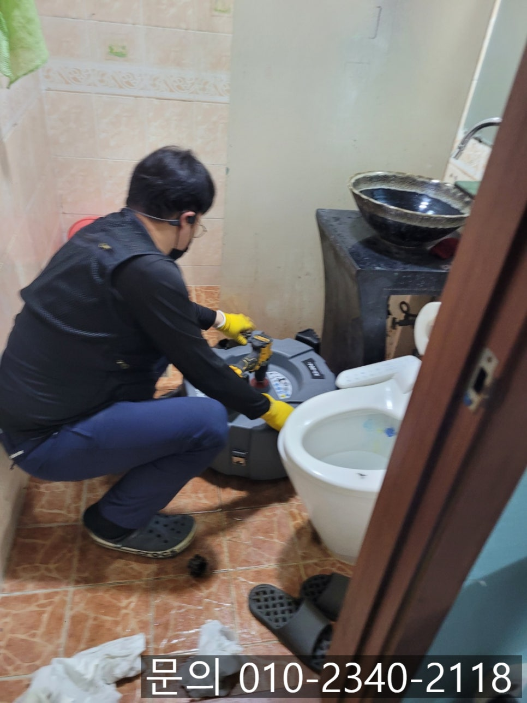
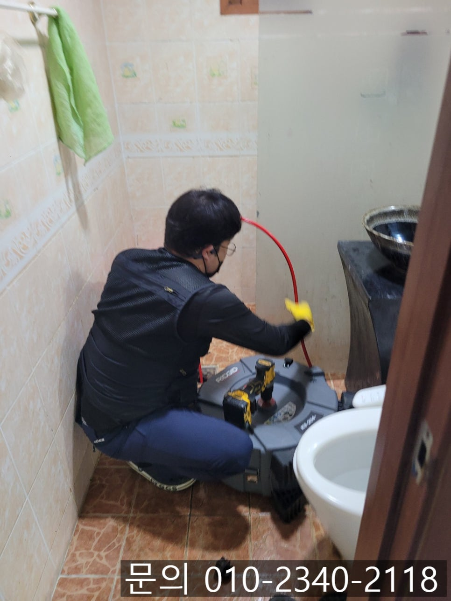
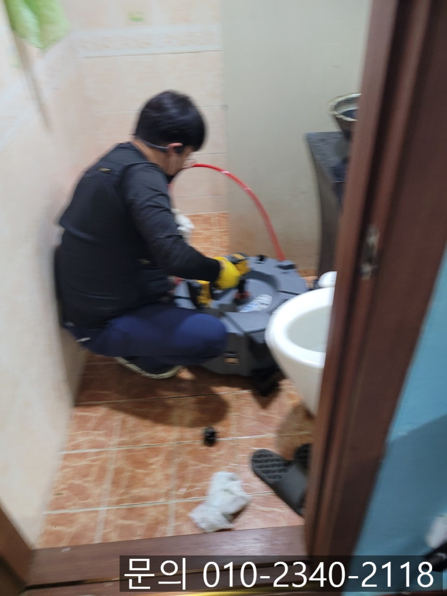

🏠 정자동 화장실 바닥 막힘 장안구 영화동 빌라 세탁실 하수구 배관 역류 뚫는 업체
수원 하수구막힘 전문 시공 후기

📋 작업 개요
- 위치: 수원
- 서비스 유형: 하수구막힘, 배관막힘, 누수수리, 역류해결, 뚫는업체, 배관청소
- 작업 일시: 2025. 6. 2. 23:26
- 업체명: 하수구수사대 (010-5615-2118)
🔍 문제 상황
안녕하세요.
정자동 화장실 바닥 막힘 장안구 영화동 빌라 세탁실 하수구 배관 역류 뚫는 업체 하수구 다큐입니다.
화장실의 경우 다양한 이유로 하루에도 여러 번 사용하는 공간입니다.
아침에 눈을 떠서 세수를 하고, 퇴근 후 피곤한 몸을 씻고 용변을 보는 등 우리 생활에 없어서는 안 될 장소인데요.
그런데 어느 날부터 화장실 바닥 배수구에서 물이 잘 내려가지 않고, 불쾌한 냄새가 느껴지기 시작하면 신경 쓰이기는 하지만 물을 한꺼번에 많이 써서 그런 건가? 배수구에 머리카락이 많이 찼나? 괜찮아지겠지? 하고 넘어가는 경우가 많습니다.
하지만 시간이 지나갈수록 괜찮아지기는커녕 정자동 화장실 바닥 막힘으로 인해 사용한 물이 내려가지 못하고 차오르면서 바닥이 축축해지고, 악취까지 나기 시작하면서 일생생활에 큰 불편을 주게 됩니다.
정자동 화장실 바닥 막힘이 발생하게 되면 단순하게 화장실에서 씻지를 못해 불편한 문제뿐 아니라 심각한 경우 아래층 화장실로 누수까지 이어질 수 있어, 정자동 화장실 바닥 막힘이 발생하게 되면 신속하게 원인을 찾아 해결해야 해요.

🔎 원인 분석
💡 전문가 진단: 정밀 진단 장비를 사용하여 슬러지의 고착 여부를 판명하고 타격/세척 작업을 실시했습니다.
오늘은 화장실 바닥 역류의 원인과 장안구 영화동 빌라 세탁실 하수구 배관 역류 뚫는 업체 하수구 다큐가 현장에서 해결하는 방법을 소개해 드리겠습니다.
화장실 바닥 역류, 왜 발생하는 걸까요?
머리카락, 비누 찌꺼기, 휴지 등이 물과 함께 들어가 쌓이면서 막힘이 발생하게 됩니다.
물이 자연스럽게 흘러가야 하는데 배관의 경사가 부족할 경우 물이 역류하는 현장이 발생합니다.
건물 외부 하수도까지 막히면, 그 배관에 연결되어 있는 화장실에서 역류가 발생합니다.
장안구 영화동 빌라 세탁실 하수구 배관 역류 뚫는 업체 하수구 다큐에게 도움을 요청하는 전화가 한통 왔습니다.
전화를 받아보니 세탁기에서 나온 물이 흘러나가지 못하고 세탁실에 역류하는데, 동시에 화장실 바닥에서 물이 내려가지 않는다고 빨리 와줄 수 있냐는 연락을 받았습니다.
현장에 도착해 보니 고객님께서 말씀하신 것처럼 세탁실 바닥에 물이 찰랑찰랑 넘쳐있는 상태였습니다.

🔧 작업 과정
우선 석션을 사용해 역류한 물을 제거한 다음 내시경 카메라를 이용해 정확한 원인을 파악해 봤어요.
세탁실 하수구의 경우 세탁기에서 나오는 먼지와 머리카락 등의 이물질이 뒤엉켜 배관을 막고 있는 상태였습니다.
다음으로 화장실 바닥 역시 내시경 카메라로 점검해 보니 세탁실과 마찬가지로 머리카락과 먼지, 기름 슬러지 등으로 인해 배관이 막혀있는 상태였습니다.
고객님께 내시경 카메라를 이용해 촬영한 배관 내부를 보여드리며 막힘의 원인을 안내해 드리고, 배관 청소 방법과 발생되는 비용까지 안내해 드린 다음 장안구 영화동 빌라 세탁실 하수구 배관 역류를 해결해 드리기로 했어요.
정확한 원인을 파악하고 나면 배관 청소는 어렵지 않습니다.
내시경 카메라를 배관 내부로 진입시켜 이물질의 위치를 파악한 다음 플렉스 샤프트 장비를 사용해 이물질을 제거할 거예요.
플렉스 샤프트 장비는 노즐 끝에 달린 체인이 배관 내부에서 회전하면서 딱딱한 기름 슬러지는 잘게 부서 주는 역할을 하는데요.
머리카락처럼 부서지지 않는 이물질의 경우 체인에 걸어 제거해 주기도 합니다.
플렉스 샤프트 장비를 이용해 이물질을 제거하는 작업을 반복해서 진행하자 깨끗해진 배관 내부를 확인할 수 있었어요.
마지막으로 많은 양의 물을 흘려보내면서 배관에 다른 문제는 없는지도 꼼꼼하게 테스트해드리고 작업을 마칠 수 있었습니다.
세탁실과 화장실 바닥이 동시에 막히는 경우는 가정에서 사용한 물이 흘러나가는 배관이 연결되는 부분에 문제인 가능성이 큽니다.
하수구 다큐는 다양한 현장 경험을 통해 쌓은 노하우를 바탕으로 정확한 원인을 찾아 막힘을 해결해 드리고 있어요.


✅ 작업 완료
지금 하수구 막힘으로 고민하고 계신다면 연락 주세요.
시원하게 해결해 드리겠습니다.
경기도 수원시 장안구 서부로 2139 5층 5032호




⚠️ 베란다 누수 및 방수 관리 방법
- ✅ 비가 많이 올 때 창틀 주변이나 아래층 천장에 얼룩이 생기는지 정기적으로 확인해 보세요.
- ✅ 우수관 주변 실리콘 마감이 들뜨거나 깨진 틈새가 있는지 손상 여부를 수시로 체크하세요.
- ✅ 베란다 바닥 타일의 줄눈(메지)이 소실되면 그 틈으로 물이 침투하여 누수가 유발됩니다.
- ✅ 누수 의심 증상 발견 시 방치하면 아래층 손실이 커지므로 즉시 전문가의 진단을 받으십시오.
💡 핵심 정리
- 확실한 장비 작업(내시경 점검 및 샤프트 스케일링)으로 원인을 뿌리 뽑습니다.
- 작업 후 1년 이내에 동일한 부위 재발 시 100% 무상 A/S 서비스를 보장합니다.
- 서울 · 경기 · 인천 전 지역에 24시간 언제든 긴급 출동할 수 있도록 항시 대기 중입니다.
❓ 자주 묻는 질문 (FAQ)
🚨 수원 하수구막힘 문제로 고민이신가요?
정확한 원인 진단과 확실한 시공으로 재발 없는 해결을 약속드립니다.
24시간 긴급 출동 | 서울 · 경기 · 인천 전지역 | 1년 내 재발 시 무상 A/S